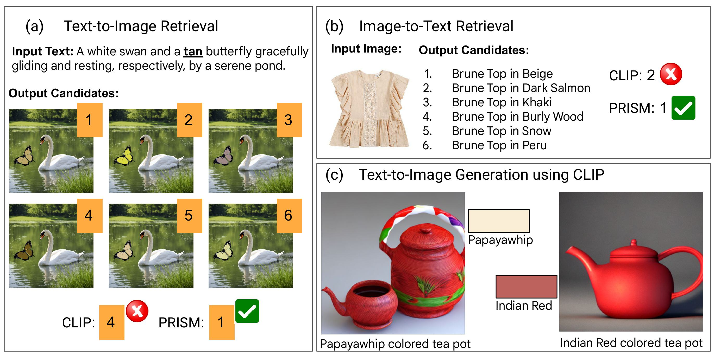

PRISM: A New Lens for Improved Color Understanding

While image-text pre-trained models, such as CLIP, have demonstrated impressive capabilities in learning robust text and image representations, a critical area for substantial improvement remains—precise color understanding. In this paper, we address this limitation by introducing PRISM, a simple yet highly effective method that extends CLIP's capability to grasp the nuances of precise colors. PRISM seamlessly adapts to both recognized HTML colors and out-of-vocabulary RGB inputs through the utilization of our curated dataset of 100 image-text pairs, which can be effortlessly repurposed for fine-tuning with any desired color. Importantly, PRISM achieves these enhancements without compromising CLIP's performance on established benchmarks. Furthermore, we introduce a novel evaluation framework, ColorLens, featuring both seen and unseen test sets that can be readily repurposed to assess a model's precision in understanding precise colors. Our comprehensive evaluation and results demonstrate significant improvements over baseline models.